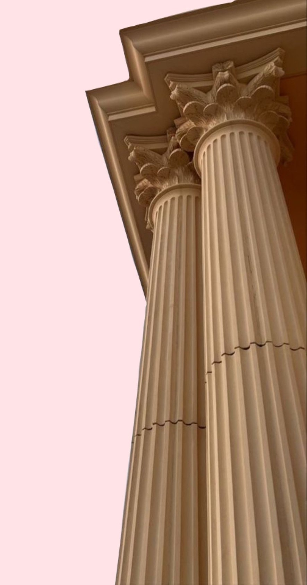
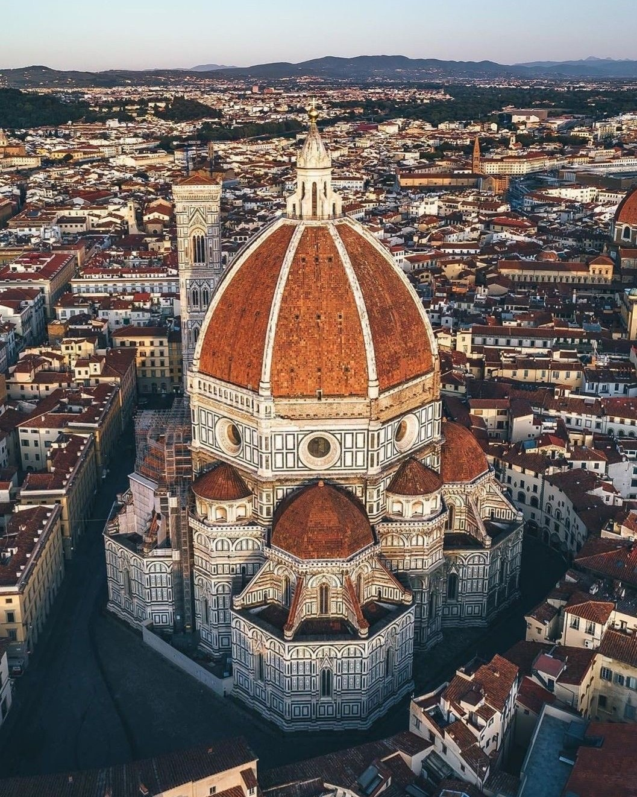
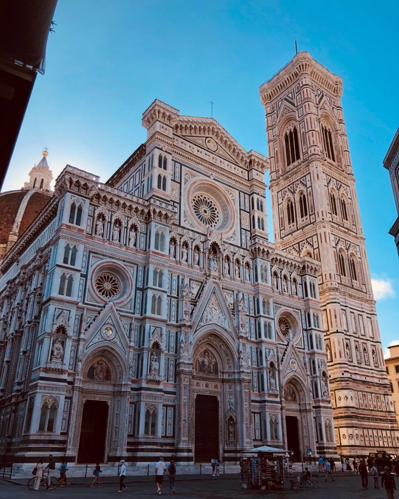

L'architettura, per me, è molto più di un semplice disciplina tecnica: è un'arte che unisce bellezza e funzionalità, creando spazi che non solo soddisfano bisogni pratici, ma suscitano anche emozioni. Ogni edificio ha una propria storia da raccontare, non solo attraverso le sue forme, ma anche nel modo in cui interagisce con l'ambiente circostante.
E' un linguaggio che parla attraverso linee, curve e materiali. E' un sogno che mi accompagna da tempo, una passione che cresce ogni giorno. Penso che l'architettura non sia solo costruire edifici ma creare luoghi che abbiano una propria anima, che facciano sentire chi li abita o chi li vive in armonia con ciò che li circonda.


Sono una ragazza molto precisa, mi piace curare ogni dettaglio e sono sempre alla ricerca della perfezione in tutto ciò che faccio. Questo è uno dei motivi per cui l'architettura mi attira così tanto: la possibilità di lavorare su progetti complessi, di pensare a ogni singolo elemento e vedere come tutto si unisce per creare qualcosa di unico. Ma allo stesso tempo, so che è un campo difficile, che richiede impegno, sacrificio e determinazione. E in questo momento devo ammettere che non sono ancora sicura se ce la farò.
Diventare un architetto per me significa avere la possibilità di lasciare un segno tangibile nel mondo, di trasformare idee in realtà. Voglio creare qualcosa che va oltre l'aspetto estetico, che abbia un impatto positivo sulle persone, che migliori la qualità della vita e che sia in armonia con l'ambiente.
Torna all'inizio!!!